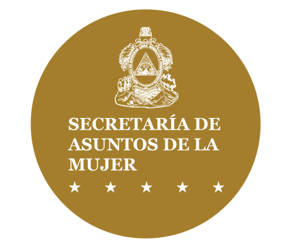

Comprender la violencia
Conoce conceptos, consentimiento, mitos, impactos, violencia digital, prevención, marco legal y mucho más.

Una propuesta digital de SEMUJER para facilitar información, reconocer señales de violencia, valorar riesgos, preparar un plan de seguridad y conocer rutas de atención.
“Libre de violencias, con derechos y autonomía”
Elige una opción y te mostraremos un camino sencillo.
Conoce conceptos, consentimiento, mitos, impactos, violencia digital, prevención, marco legal y mucho más.
Revisa señales de control, amenazas, violencia sexual, económica, digital y otras manifestaciones.
Responde una guía orientativa que prioriza señales de peligro grave.
Organiza contactos, documentos, rutas de salida y otras medidas de seguridad.
Ordena hechos, fechas, tipos de violencia, evidencias y necesidades de atención.
Consulta los canales oficiales y una ruta básica para saber a quién acudir.
Orientación para mujeres indígenas, afrohondureñas, con discapacidad, adolescentes y otras situaciones.
La opción de instalación está aquí y dentro del menú desplegable. Ya no aparece como botón flotante sobre el contenido.
Evita escribir información sensible si otra persona revisa tu teléfono, correo o historial. El botón Salida rápida reemplaza esta página por una página neutral.
Información educativa para reconocer cómo se manifiesta la violencia, por qué constituye una vulneración de derechos y qué conceptos pueden ayudar a identificarla y prevenirla.
Comprende actos o conductas basadas en género que causan o pueden causar daño físico, sexual o psicológico, además de amenazas, coerción o privación arbitraria de libertad. Puede ocurrir en espacios privados o públicos.
La violencia no se limita a los golpes. También puede aparecer mediante control, aislamiento, intimidación, humillación, coerción sexual, control económico, destrucción de bienes, persecución o abuso mediante tecnologías.
La OMS señala que la violencia de pareja incluye agresión física, coerción sexual, abuso psicológico y conductas de control por parte de una pareja o expareja.
Muchas formas de violencia buscan restringir la autonomía de una mujer: decidir con quién se relaciona, cómo usa su dinero, dónde trabaja, cómo se viste, cuándo sale o qué decisiones toma sobre su cuerpo.
La violencia no se explica por una única causa. Intervienen factores individuales, familiares, comunitarios y sociales. Sin embargo, la OMS identifica la desigualdad de género y las normas que legitiman privilegios, subordinación o control sobre las mujeres como factores estructurales centrales.
Los celos, el consumo de alcohol, el desempleo o los conflictos de pareja no justifican la violencia ni trasladan la responsabilidad a la mujer que la vive.
Para fines educativos, el consentimiento sexual supone una participación libre y activa. No debe obtenerse mediante presión, miedo, amenazas, manipulación o abuso de poder.
No surge de amenazas, presión, miedo o coerción.
No basta interpretar el silencio o la falta de resistencia como consentimiento.
Aceptar una actividad no significa aceptar otras.
Una persona puede cambiar de decisión durante una interacción.
Haber consentido antes, mantener una relación de pareja o matrimonio, recibir regalos o acudir voluntariamente a un lugar no equivale por sí mismo a consentir una actividad sexual. Una persona inconsciente o que no puede comprender o decidir libremente no puede dar un consentimiento válido.
Las reglas jurídicas aplicables a niñas, niños y adolescentes dependen de la legislación vigente y requieren protección reforzada.
En algunas relaciones aparecen períodos de tensión, episodios de agresión y etapas posteriores de disculpas, promesas o aparente calma. No todas las situaciones siguen el mismo patrón.
Los períodos de calma no necesariamente significan que el riesgo terminó. También pueden dificultar reconocer la violencia o tomar decisiones.
Una mujer puede permanecer o regresar a una relación por miedo, amenazas, dependencia económica, hijas o hijos, aislamiento, falta de vivienda, barreras territoriales, presión familiar, esperanza de cambio u otras razones. Permanecer no significa aceptar la violencia.
Incluye actos sexuales, intentos o contactos dirigidos contra la sexualidad de una persona mediante coerción, independientemente de la relación con quien ejerce la violencia.
En Honduras, la Ley Contra la Violencia Doméstica reconoce la violencia sexual dentro de las relaciones comprendidas por la ley.
Puede expresarse mediante intimidación, manipulación, amenazas, humillación, aislamiento, vigilancia, insultos, chantaje, ridiculización o control de decisiones.
En Honduras, la Ley Contra la Violencia Doméstica incluye la pérdida, sustracción, destrucción o retención de bienes y documentos, así como acciones que afecten los recursos o ingresos de la mujer.
ONU Mujeres describe la violencia facilitada por tecnología como un continuo que puede conectarse con la violencia fuera de internet e incluir acoso sexual, persecución, discursos de odio, difamación y otras formas de abuso.
Precaución: cambiar una contraseña o desactivar una ubicación puede alertar a una persona agresora. Antes de modificar configuraciones, considera si hacerlo podría aumentar el riesgo.
Golpes, empujones, quemaduras, encierro, inmovilización, uso de objetos y otras acciones contra la integridad física son señales que requieren atención.
Amenazas de muerte, estrangulación o asfixia, uso o amenaza con armas, impedir que una persona salga o reciba atención médica y el aumento de frecuencia o gravedad de la violencia son señales que deben tomarse seriamente.
Las mujeres pueden vivir hostigamiento, acoso, abuso sexual, amenazas o discriminación en espacios laborales, educativos, comunitarios, políticos, digitales y públicos.
La institución competente y el procedimiento pueden variar según quién ejerce la conducta, dónde ocurre, la edad de la persona afectada y si los hechos constituyen una infracción administrativa, laboral, doméstica o un delito.
La OMS señala consecuencias físicas, mentales, sexuales y reproductivas a corto y largo plazo. También puede afectar a hijas e hijos y generar aislamiento, pérdida de ingresos y dificultades para participar en actividades cotidianas.
Lesiones, dolor, problemas crónicos y consecuencias asociadas a agresiones.
Ansiedad, depresión, miedo persistente, afectación del sueño y otros problemas.
Embarazos no planificados, infecciones de transmisión sexual y complicaciones reproductivas.
Aislamiento, pérdida de empleo o ingresos, ausencias y dificultades para estudiar o trabajar.
Una respuesta respetuosa puede facilitar que la persona busque ayuda y mantenga el control sobre sus decisiones.
Si hay peligro inmediato, busca apoyo de servicios de emergencia de una manera que no incremente el riesgo.
No todas las mujeres tienen las mismas condiciones para denunciar o acudir a servicios. La distancia, dependencia económica, miedo, amenazas, estigma, idioma, discapacidad o desconfianza institucional pueden convertirse en barreras.
Algunas mujeres enfrentan riesgos y obstáculos adicionales por edad, discapacidad, pertenencia indígena o afrohondureña, situación migratoria, residencia rural, pobreza u otras condiciones. La respuesta debe adaptar los servicios sin reducir la autonomía de la mujer.
La prevención no consiste únicamente en enseñar a las mujeres a protegerse. Requiere promover igualdad, relaciones respetuosas, autonomía, educación, respuestas institucionales eficaces y rechazo social a todas las formas de violencia.
La ley hondureña protege la integridad física, psicológica, patrimonial y sexual de las mujeres en las relaciones comprendidas por su ámbito de aplicación y reconoce formas físicas, psicológicas, sexuales y patrimoniales/económicas de violencia.
Este es un resumen educativo. Los procedimientos y reformas deben verificarse siempre en la normativa oficial vigente.
Consultar texto oficial del Poder Judicial ↗La Política Nacional de la Mujer – III Plan de Igualdad y Justicia de Género de Honduras organiza siete ejes de derechos. Su Eje 2 se centra en el derecho de las mujeres y niñas a una vida libre de violencias.
El eje plantea responsabilidades del Estado para garantizar una vida libre de violencias, junto con paz, justicia y seguridad. Una herramienta digital institucional debe contribuir a prevención, orientación, acceso a servicios, información y articulación de rutas, no limitarse únicamente a recibir denuncias.
Consultar Política Nacional en SEMUJER ↗La Biblioteca del Observatorio Nacional de Género de SEMUJER reúne normativa nacional e internacional relevante para los derechos de las mujeres.
Capacidad de tomar decisiones sobre la propia vida, cuerpo, recursos y proyectos sin coerción.
Uso de presión, amenazas, fuerza, manipulación o abuso de poder para obtener una conducta.
Patrón de acciones destinado a limitar la libertad y autonomía de otra persona mediante vigilancia, aislamiento, miedo u otras formas de control.
Ambos términos pueden utilizarse según el contexto. “Sobreviviente” suele enfatizar agencia y recuperación; “víctima” tiene usos jurídicos e institucionales.
Nuevo daño producido por respuestas, prácticas o interacciones que culpabilizan, humillan o hacen repetir innecesariamente experiencias traumáticas.
Respuesta que prioriza seguridad, dignidad, derechos, decisiones y necesidades de la mujer.
OMS, ONU Mujeres, Poder Judicial de Honduras y SEMUJER/ONAG. Contenido revisado para esta versión el 18 de agosto de 2026.
Una situación puede incluir varias formas de violencia al mismo tiempo. Los ejemplos son orientativos y no sustituyen la valoración de una autoridad o profesional.
Golpes, empujones, quemaduras, encierro, lesiones, uso de objetos o acciones que ponen en riesgo la integridad física.
Amenazas, insultos, aislamiento, chantaje, intimidación, desvalorización o control persistente.
Contacto o práctica sexual obtenida mediante fuerza, presión, amenazas, manipulación, miedo o cuando la persona no puede consentir.
Impedir trabajar o estudiar, quitar ingresos, controlar el dinero, generar deudas o negar recursos básicos como forma de control.
Destruir, ocultar, retener o apropiarse de documentos, vivienda, pertenencias, herramientas u otros bienes.
Revisar cuentas sin permiso, rastrear ubicación, amenazas digitales, suplantación o difusión de contenido íntimo sin consentimiento.
Seguimiento, mensajes insistentes, vigilancia, acercamientos intimidantes o conductas que generan temor o limitan la libertad.
Presiones, amenazas, castigos o conductas de naturaleza sexual o discriminatoria que afectan el trabajo o estudio.
Marca todas las que correspondan. El resultado no es un diagnóstico.
Marca únicamente lo que esté ocurriendo o haya ocurrido recientemente. Las señales críticas se priorizan aunque el puntaje total sea bajo.
Si sientes miedo o percibes peligro, puedes buscar apoyo aunque el resultado de esta guía sea bajo.
No existe un único plan correcto. Completa solo lo que sea seguro para ti. Esta información no se guarda automáticamente.
Piensa en una o dos personas que puedan reconocer una palabra clave y ayudarte sin alertar a quien representa el riesgo.
Identifica un lugar al que puedas acudir si necesitas salir: familiar, amistad, institución o espacio público seguro.
Cuando sea seguro, considera documentos, medicamentos, llaves, dinero, ropa básica y necesidades de niñas, niños o personas dependientes.
Revisa si tu ubicación, cuentas o dispositivos están siendo compartidos. Cambiar configuraciones puede ser riesgoso si otra persona lo detecta.
Capturas o exportaciones pueden ser útiles si pueden conservarse de forma segura.
Los registros de atención pueden documentar lesiones o afectaciones.
Una cronología sencilla puede ayudarte a recordar lugares, amenazas y personas presentes.
Conserva copias de documentos importantes en un lugar seguro cuando sea posible.
No arriesgues tu seguridad para obtener una prueba. La ausencia de fotografías, mensajes u otros documentos no impide buscar ayuda.
Este formulario crea un resumen local para ayudarte a explicar lo ocurrido. No presenta una denuncia oficial y no envía los datos a ningún servidor.
La disponibilidad, competencia y horario de cada servicio puede variar. Verifica la información directamente con la institución cuando sea posible.
SEMUJER informa que brinda atención, orientación y denuncia; además señala asesoría legal, apoyo psicológico y derivación institucional.
Llamar 1-1-4 Fuente oficial SEMUJER ↗Para situaciones que requieren respuesta inmediata de los servicios de emergencia.
Llamar 911 Sitio oficial ↗El Ministerio Público señala competencia nacional en violencia física, psicológica, sexual, patrimonial y económica.
Fuente oficial MP ↗Su sitio oficial presenta módulos de atención y centros en Choloma, Choluteca, Juticalpa, La Ceiba, San Pedro Sula y Tegucigalpa, además de Ciudad Mujer Móvil.
Consultar centros ↗Si hay peligro inmediato, prioriza salir a un lugar seguro y contactar al 911 cuando sea posible.
La Línea 1-1-4 puede ser un primer canal para orientación y derivación.
Dependiendo de la situación, puede requerirse atención médica, psicológica, legal, protección u otros servicios.
El Ministerio Público y otras autoridades competentes pueden intervenir según el hecho y el procedimiento aplicable.
Conserva de forma segura cualquier número de caso, constancia o información que la institución te entregue.
Las barreras territoriales, lingüísticas, culturales, económicas, de edad o discapacidad pueden afectar el acceso a servicios. Esta aplicación permite indicar apoyos específicos en la pre-denuncia.
La atención debe evitar humillaciones, culpabilización o prácticas que reproduzcan violencia.
La información sensible debe manejarse con cuidado y únicamente para los fines de atención correspondientes.
La pertenencia étnica, discapacidad, edad, lugar de residencia, situación económica u otra condición no debería convertirse en una barrera para recibir orientación.
La información debe explicarse de forma clara y, cuando se requiera, considerar apoyos de comunicación o lingüísticos.
En mujeres indígenas y afrohondureñas, la respuesta debe considerar contexto territorial, lengua, prácticas culturales y riesgos específicos sin imponer estereotipos.
Las mujeres con discapacidad pueden requerir ajustes de comunicación, movilidad, acompañamiento u otras medidas para participar en igualdad.
Puede ser importante registrar, si la mujer desea hacerlo, su lengua preferida, necesidad de intérprete, comunidad, barreras territoriales y apoyos de confianza. La pertenencia a un pueblo no debe presumirse ni utilizarse para limitar su autonomía.
La atención puede requerir formatos accesibles, lectura fácil, lengua de señas, apoyo para movilidad u otras adaptaciones. El apoyo no debe sustituir la voluntad de la mujer.
Las situaciones que involucran niñas y adolescentes requieren salvaguardas reforzadas y la intervención de las autoridades competentes según el caso.
La distancia, conectividad y disponibilidad de transporte pueden afectar la búsqueda de ayuda. El plan de seguridad puede incluir rutas alternativas, personas de confianza y canales telefónicos.
No necesitas reunir pruebas para solicitar orientación o ayuda. No te expongas a un riesgo mayor para conseguirlas.
No. Esta versión genera información de apoyo y un resumen temporal. Para una denuncia oficial debes utilizar los canales de las autoridades competentes.
No utiliza localStorage ni sessionStorage y los formularios funcionan únicamente durante la sesión abierta. Sin embargo, el dispositivo, navegador o red pueden tener sus propios registros.
Si el navegador admite aplicaciones web progresivas, puede ofrecer la opción de instalarla. También puedes agregar el sitio a la pantalla de inicio.